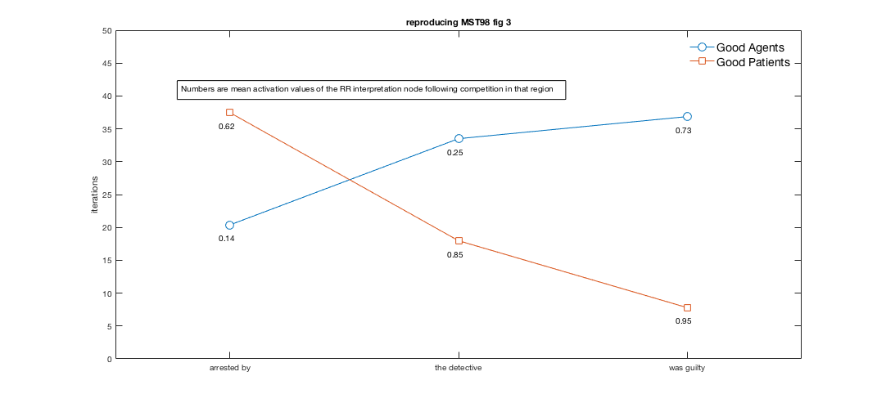

This program reproduces Macrae, Spivey-Knowlton and Tanenhaus' 1998 competition-integration model of incremental sentence processing for the main clause / reduced relative synatctic ambiguity
Contents
wrapper function main
read inputs via getInputs() loops through deltas calling norm_recurr()
function main () % read from file the values of the input node yoked pairs. These are % normalised in the file [WeightsRegion1, WeightsRegion2,WeightsRegion3,inputnodesAll] = getInputs(); % set global variable values deltamin=0.006; deltamax=0.009; deltastep=0.0001; numdeltas=31; deltacounter=0; numsentences=80; numitems=40; numregions=3; numagencies=2; % initialise output matrix for (1) delta, (2) activations at end of % competition for a region for each sentence; and (3) number of iterations % required to reach criterion for a region for a sentence out_matrix=zeros(numdeltas,3,numregions,numagencies,numitems); % start looping through deltas for deltacrit = deltamin : deltastep : deltamax % increment a counter that indexes number of delta runs deltacounter = deltacounter + 1; % call normalised recurrence function [out_matrix] = ... norm_recurr(deltacrit, deltacounter, out_matrix, inputnodesAll, WeightsRegion1, WeightsRegion2, WeightsRegion3, numsentences); end % of all delta runs % process the output, saving a n-D matrix in .mat form, a flat matrix in % .dat means in .dat and returning mean iterations and activations for the % mst98 fig 3 plot reproduction [mean_itrs, mean_acts] = save_outcomes(out_matrix,numdeltas,numregions,numagencies,numitems); % try to replicate MST1998 fig 3 plotmst98fig3(mean_itrs,mean_acts); return % exits main end % ends main
normalised recurrence
for a supplied value of delta, select a sentence, run through all 3 regions with that sentence, recording activations and iterations for that sentence. Keep going until all sentences are processed and return matrices containing all-sentence iterations and RR activations
function [out_matrix] =... norm_recurr(deltacrit, deltacounter, out_matrix, inputnodesAll, WeightsRegion1, WeightsRegion2, WeightsRegion3, numsentences) % loop through sentences for sentence = 1:numsentences % set agency, good agent vs good patient if sentence <=40 agency=1; else agency=2; end % set item number 1 to 40 if sentence <=40 item=sentence; else item=sentence-40; end % region 1 arrested by region=1; % get the input nodes for the new sentence inputnodes=inputnodesAll(sentence,:); weights=WeightsRegion1; numiterations=1; hit_dyn = 0; % while we have yet to hit dynamic criterion while (hit_dyn == 0) % normalise input nodes den1 = inputnodes(1)+inputnodes(2); den2 = inputnodes(3)+inputnodes(4); den3 = inputnodes(5)+inputnodes(6); den4 = inputnodes(7)+inputnodes(8); inputnodes(1)=inputnodes(1)/den1; inputnodes(2)=inputnodes(2)/den1; inputnodes(3)=inputnodes(3)/den2; inputnodes(4)=inputnodes(4)/den2; inputnodes(5)=inputnodes(5)/den3; inputnodes(6)=inputnodes(6)/den3; inputnodes(7)=inputnodes(7)/den4; inputnodes(8)=inputnodes(8)/den4; % feedforward onto interpretation nodes (is integration) RRact=weights(1)*inputnodes(1)+weights(3)*inputnodes(3)+weights(5)*inputnodes(5)+weights(7)*inputnodes(7); MCact=weights(2)*inputnodes(2)+weights(3)*inputnodes(4)+weights(5)*inputnodes(6)+weights(7)*inputnodes(8); % feedback onto input nodes (is competition) inputnodes(1)=inputnodes(1)+weights(1)*inputnodes(1)*RRact; inputnodes(2)=inputnodes(2)+weights(2)*inputnodes(2)*MCact; inputnodes(3)=inputnodes(3)+weights(3)*inputnodes(3)*RRact; inputnodes(4)=inputnodes(4)+weights(4)*inputnodes(4)*MCact; inputnodes(5)=inputnodes(5)+weights(5)*inputnodes(5)*RRact; inputnodes(6)=inputnodes(6)+weights(6)*inputnodes(6)*MCact; inputnodes(7)=inputnodes(7)+weights(7)*inputnodes(7)*RRact; inputnodes(8)=inputnodes(8)+weights(8)*inputnodes(8)*MCact; % decrement the dynamic criterion on the first iteration the value % of numiterations is one so dynamic_crit never starts at one, it % is decremented before the test whether either interpretation node % has exceeded the criterion dynamic_crit = 1 - (numiterations * deltacrit); % test whether either interpretation node has reached the dynamic % criterion if ((RRact >= dynamic_crit) || (MCact >= dynamic_crit)) hit_dyn = 1; % note that number of iterations is not increased in the event % that an interpretation node has reached criterion else numiterations=numiterations+1; end % test end % while hit_dyn==0 keep looping else fall through % after dynamic criterion is reached by an interpretation node, record % the number of iterations and the final (and *not* normalised) value % of the interpretation node for this sentence in this region out_matrix(deltacounter,1,region,agency,item) = deltacrit; out_matrix(deltacounter,2,region,agency,item) = RRact; out_matrix(deltacounter,3,region,agency,item) = numiterations; % region 2 the detective region=2; weights=WeightsRegion2; numiterations=1; hit_dyn = 0; % while we have yet to hit dynamic criterion while (hit_dyn == 0) % normalise input nodes den1 = inputnodes(1)+inputnodes(2); den2 = inputnodes(3)+inputnodes(4); den3 = inputnodes(5)+inputnodes(6); den4 = inputnodes(7)+inputnodes(8); den5 = inputnodes(9)+inputnodes(10); inputnodes(1)=inputnodes(1)/den1; inputnodes(2)=inputnodes(2)/den1; inputnodes(3)=inputnodes(3)/den2; inputnodes(4)=inputnodes(4)/den2; inputnodes(5)=inputnodes(5)/den3; inputnodes(6)=inputnodes(6)/den3; inputnodes(7)=inputnodes(7)/den4; inputnodes(8)=inputnodes(8)/den4; inputnodes(9)=inputnodes(9)/den5; inputnodes(10)=inputnodes(10)/den5; % feedforward onto interpretation nodes (is integration) RRact=weights(1)*inputnodes(1)+weights(3)*inputnodes(3)+weights(5)*inputnodes(5)+weights(7)*inputnodes(7)+weights(9)*inputnodes(9); MCact=weights(2)*inputnodes(2)+weights(4)*inputnodes(4)+weights(6)*inputnodes(6)+weights(8)*inputnodes(8)+weights(10)*inputnodes(10); % feedback onto input nodes (is competition) inputnodes(1)=inputnodes(1)+weights(1)*inputnodes(1)*RRact; inputnodes(2)=inputnodes(2)+weights(2)*inputnodes(2)*MCact; inputnodes(3)=inputnodes(3)+weights(3)*inputnodes(3)*RRact; inputnodes(4)=inputnodes(4)+weights(4)*inputnodes(4)*MCact; inputnodes(5)=inputnodes(5)+weights(5)*inputnodes(5)*RRact; inputnodes(6)=inputnodes(6)+weights(6)*inputnodes(6)*MCact; inputnodes(7)=inputnodes(7)+weights(7)*inputnodes(7)*RRact; inputnodes(8)=inputnodes(8)+weights(8)*inputnodes(8)*MCact; inputnodes(9)=inputnodes(9)+weights(9)*inputnodes(9)*RRact; inputnodes(10)=inputnodes(10)+weights(10)*inputnodes(10)*MCact; % decrement the dynamic criterion on the first iteration the value % of numiterations is one so dynamic_crit never starts at one, it % is decremented before the test whether either interpretation node % has exceeded the criterion dynamic_crit = 1 - (numiterations * deltacrit); % test whether either interpretation node has reached the dynamic % criterion if ((RRact >= dynamic_crit) || (MCact >= dynamic_crit)) hit_dyn = 1; % note that number of iterations is not increased in the event % that an interpretation node has reached criterion else numiterations=numiterations+1; end % test end % while hit_dyn==0 keep looping else fall through % after dynamic criterion is reached by an interpretation node, record % the number of iterations and the final (and *not* normalised) value % of the interpretation node for this sentence in this region out_matrix(deltacounter,1,region,agency,item) = deltacrit; out_matrix(deltacounter,2,region,agency,item) = RRact; out_matrix(deltacounter,3,region,agency,item) = numiterations; % region 3 was guilty region=3; weights=WeightsRegion3; numiterations=1; hit_dyn = 0; % while we have yet to hit dynamic criterion while (hit_dyn == 0) % normalise input nodes den1 = inputnodes(1)+inputnodes(2); den2 = inputnodes(3)+inputnodes(4); den3 = inputnodes(5)+inputnodes(6); den4 = inputnodes(7)+inputnodes(8); den5 = inputnodes(9)+inputnodes(10); den6 = inputnodes(11)+inputnodes(12); inputnodes(1)=inputnodes(1)/den1; inputnodes(2)=inputnodes(2)/den1; inputnodes(3)=inputnodes(3)/den2; inputnodes(4)=inputnodes(4)/den2; inputnodes(5)=inputnodes(5)/den3; inputnodes(6)=inputnodes(6)/den3; inputnodes(7)=inputnodes(7)/den4; inputnodes(8)=inputnodes(8)/den4; inputnodes(9)=inputnodes(9)/den5; inputnodes(10)=inputnodes(10)/den5; inputnodes(11)=inputnodes(11)/den6; inputnodes(12)=inputnodes(12)/den6; % feedforward onto interpretation nodes (is integration) RRact=weights(1)*inputnodes(1)+weights(3)*inputnodes(3)+weights(5)*inputnodes(5)+weights(7)*inputnodes(7)+weights(9)*inputnodes(9)+weights(11)*inputnodes(11); MCact=weights(2)*inputnodes(2)+weights(4)*inputnodes(4)+weights(6)*inputnodes(6)+weights(8)*inputnodes(8)+weights(10)*inputnodes(10)+weights(12)*inputnodes(12); % feedback onto input nodes (is competition) inputnodes(1)=inputnodes(1)+weights(1)*inputnodes(1)*RRact; inputnodes(2)=inputnodes(2)+weights(2)*inputnodes(2)*MCact; inputnodes(3)=inputnodes(3)+weights(3)*inputnodes(3)*RRact; inputnodes(4)=inputnodes(4)+weights(4)*inputnodes(4)*MCact; inputnodes(5)=inputnodes(5)+weights(5)*inputnodes(5)*RRact; inputnodes(6)=inputnodes(6)+weights(6)*inputnodes(6)*MCact; inputnodes(7)=inputnodes(7)+weights(7)*inputnodes(7)*RRact; inputnodes(8)=inputnodes(8)+weights(8)*inputnodes(8)*MCact; inputnodes(9)=inputnodes(9)+weights(9)*inputnodes(9)*RRact; inputnodes(10)=inputnodes(10)+weights(10)*inputnodes(10)*MCact; inputnodes(11)=inputnodes(11)+weights(11)*inputnodes(11)*RRact; inputnodes(12)=inputnodes(12)+weights(12)*inputnodes(12)*MCact; % decrement the dynamic criterion on the first iteration the value % of numiterations is one so dynamic_crit never starts at one, it % is decremented before the test whether either interpretation node % has exceeded the criterion dynamic_crit = 1 - (numiterations * deltacrit); % test whether either interpretation node has reached the dynamic % criterion if ((RRact >= dynamic_crit) || (MCact >= dynamic_crit)) hit_dyn = 1; else numiterations=numiterations+1; end % test end % while hit_dyn==0 keep looping else fall through % after dynamic criterion is reached by an interpretation node, record % the number of iterations and the final (and *not* normalised) value % of the interpretation node for this sentence in this region out_matrix(deltacounter,1,region,agency,item) = deltacrit; out_matrix(deltacounter,2,region,agency,item) = RRact; out_matrix(deltacounter,3,region,agency,item) = numiterations; end % all sentences are complete for all regions return % exit norm_recurr return to main to grab another delta end % end norm_recurr
function getInputs() gets inputs
function [WeightsRegion1, WeightsRegion2,WeightsRegion3,InputnodesAll] = getInputs() % READ ALL INPUT FILES, WEIGHTS AND INPUTNODES fileID = fopen('region1weights.txt','r'); formatSpec = '%f %f %f %f %f %f %f %f'; sizeA = [8 1]; WeightsRegion1 = fscanf(fileID,formatSpec,sizeA)'; fclose(fileID); fileID = fopen('region2weights.txt','r'); formatSpec = '%f %f %f %f %f %f %f %f %f %f'; sizeA = [10 1]; WeightsRegion2 = fscanf(fileID,formatSpec,sizeA)'; fclose(fileID); fileID = fopen('region3weights.txt','r'); formatSpec = '%f %f %f %f %f %f %f %f %f %f %f %f'; sizeA = [12 1]; WeightsRegion3 = fscanf(fileID,formatSpec,sizeA)'; fclose(fileID); filename='inputnodevalues.txt'; fileID = fopen(filename,'r'); formatSpec = '%f %f %f %f %f %f %f %f %f %f %f %f'; sizeA = [12 80]; InputnodesAll = fscanf(fileID,formatSpec,sizeA)'; fclose(fileID); end
save results and compute means
function [mean_itrs,mean_acts] = save_outcomes(out_matrix,numdeltas,numregions,numagencies,numitems) % make flat file for activations and iterations numrows=numdeltas*numregions*numagencies*numitems; out_flat=cell(numrows,6); row=0; for delta=1:numdeltas for agency=1:numagencies for region=1:numregions for item=1:numitems row=row+1; out_flat{row,1}=out_matrix(delta,1,region,agency,item); if agency==1 out_flat{row,2}='good_agent'; else out_flat{row,2}='good_patient'; end if region==1 out_flat{row,3}='verb_by'; elseif region==2 out_flat{row,3}='agentNP'; elseif region==3 out_flat{row,3}='mainVerb'; end out_flat{row,4}=item; switch item case 1 ; firstverb='accused_by'; case 2 ; firstverb='arrested_by'; case 3 ; firstverb='carried_by'; case 4 ; firstverb='convicted_by'; case 5 ; firstverb='cured_by'; case 6 ; firstverb='entertained_by'; case 7 ; firstverb='evaluated_by'; case 8 ; firstverb='fired_by'; case 9 ; firstverb='frightened_by'; case 10 ; firstverb='graded_by'; case 11 ; firstverb='hired_by'; case 12 ; firstverb='hypnotized_by'; case 13 ; firstverb='instructed_by'; case 14 ; firstverb='interrogated_by'; case 15 ; firstverb='interviewed_by'; case 16 ; firstverb='invited_by'; case 17 ; firstverb='questioned_by'; case 18 ; firstverb='rescued_by'; case 19 ; firstverb='sentenced_by'; case 20 ; firstverb='served_by'; case 21 ; firstverb='shot_by'; case 22 ; firstverb='slaughtered_by'; case 23 ; firstverb='terrorized_by'; case 24 ; firstverb='tortured_by'; case 25 ; firstverb='captured_by'; case 26 ; firstverb='chased_by'; case 27 ; firstverb='devoured_by'; case 28 ; firstverb='dismissed_by'; case 29 ; firstverb='examined_by'; case 30 ; firstverb='executed_by'; case 31 ; firstverb='investigated_by'; case 32 ; firstverb='kicked_by'; case 33 ; firstverb='lectured_by'; case 34 ; firstverb='lifted_by'; case 35 ; firstverb='punished_by'; case 36 ; firstverb='recognized_by'; case 37 ; firstverb='searched_by'; case 38 ; firstverb='studied_by'; case 39 ; firstverb='taught_by'; case 40 ; firstverb='worshipped_by'; end out_flat{row,5}=firstverb; out_flat{row,6}=out_matrix(delta,2,region,agency,item); out_flat{row,7}=out_matrix(delta,3,region,agency,item); end end end end % end of all deltas OUT_FLAT=cell2table(out_flat,'VariableNames', ... {'Delta','agency','region','item','verbed_by','RRact','numiterations'}); writetable(OUT_FLAT, 'out_flat.dat','Delimiter','\t') % compute mean iters and activations mean_acts=zeros(numdeltas,7); mean_itrs=zeros(numdeltas,7); for delta = 1:numdeltas % activations mean_acts(delta,1)=mean(out_matrix(delta,1,1,1,:)); mean_acts(delta,2)=mean(out_matrix(delta,2,1,1,:)); mean_acts(delta,3)=mean(out_matrix(delta,2,2,1,:)); mean_acts(delta,4)=mean(out_matrix(delta,2,3,1,:)); mean_acts(delta,5)=mean(out_matrix(delta,2,1,2,:)); mean_acts(delta,6)=mean(out_matrix(delta,2,2,2,:)); mean_acts(delta,7)=mean(out_matrix(delta,2,3,2,:)); % iterations mean_itrs(delta,1)=mean(out_matrix(delta,1,1,1,:)); mean_itrs(delta,2)=mean(out_matrix(delta,3,1,1,:)); mean_itrs(delta,3)=mean(out_matrix(delta,3,2,1,:)); mean_itrs(delta,4)=mean(out_matrix(delta,3,3,1,:)); mean_itrs(delta,5)=mean(out_matrix(delta,3,1,2,:)); mean_itrs(delta,6)=mean(out_matrix(delta,3,2,2,:)); mean_itrs(delta,7)=mean(out_matrix(delta,3,3,2,:)); end MEAN_ACTS=array2table(mean_acts,'VariableNames', ... {'Delta','R1_a_rr','R2_a_rr','R3_a_rr','R1_p_rr','R2_p_rr','R3_p_rr'}); writetable(MEAN_ACTS, 'out_activations_means.dat','Delimiter','\t') MEAN_ITRS=array2table(mean_itrs,'VariableNames', ... {'Delta','R1_a','R2_a','R3_a','R1_p','R2_p','R3_p'}); writetable(MEAN_ITRS, 'out_iterations_means.dat','Delimiter','\t') end % save_outcomes
plot function reproduces MST98 fig 3
function plotmst98fig3(mean_itrs,mean_acts) % mst98 fig 3 lines = zeros(2,3); % initialise matrix to hold y values means_i = mean(mean_itrs); % compute y values : iterations lines(1,:) = means_i(2:4); % y values for first line (good agents iterations) lines(2,:) = means_i(5:7); % y values for second line (good patients iterations) means_a=mean(mean_acts); % numeric labels for points are activations x=1:3; % 3 regions on the x axis figure('Visible','on', 'WindowStyle','docked', 'Name','mst98fig3'); plot(x,lines(1,:)','-o','MarkerSize',10, 'MarkerFaceColor', 'white') % plot solid line with opaque circles as points hold on; % permit additional plotting text(x(1)-.05,lines(1,1)-2,num2str(means_a(2),2)); % put the numbers for activations by the points text(x(2)-.05,lines(1,2)-2,num2str(means_a(3),2)); text(x(3)-.05,lines(1,3)-2,num2str(means_a(4),2)); plot(x, lines(2,:)', '-s', 'MarkerSize', 10, 'MarkerFaceColor','white') % plot solid line with opaque squares as points text(x(1)-.05,lines(2,1)-2,num2str(means_a(5),2)); % put the numbers for activations by the points text(x(2)-.05,lines(2,2)-2,num2str(means_a(6),2)); text(x(3)-.05,lines(2,3)-2,num2str(means_a(7),2)); hlegend=legend('Good Agents','Good Patients'); % make the legend but don't put it yet set(hlegend,'FontSize',14); % bigger legend text legend boxoff; % no box round legend dim = [.2 .5 .3 .3]; % annotation location as proportion of plot real estate str = 'Numbers are mean activation values of the RR interpretation node following competition in that region'; % annotation string annotation('textbox',dim,'String',str,'FitBoxToText','on'); % put the annotation on axis([0.5 3.5 0 50]); % axis limits ax = gca; % get a handle for axis is gca ax.XTick=[1 2 3 ]; % put the x ticks ax.XTickLabel = {'arrested by','the detective','was guilty'}; % put the x tick labels ylabel('iterations'); % put the y axis label title('reproducing MST98 fig 3'); % put the title saveas(gcf,'MST_1998_fig3_reproduction.jpg') % save the graph to file end